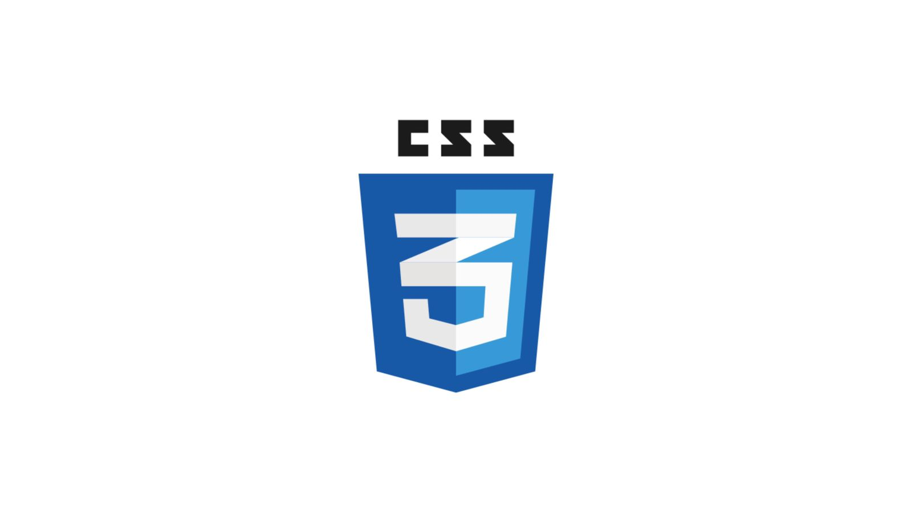

Apa itu CSS? Fungsi, Jenis dan Kelebihannya
ditulis oleh Audiena Febrianty. pada 29 Oktober 2024.
Apa Itu CSS?
Sebelum mencari tahu pengertiannya, kamu perlu tahu juga kepanjangan CSS. CSS atau Cascading Style Sheets merupakan bahasa desain sederhana yang bertujuan untuk mengubah tampilan halaman web menjadi menarik. Dengan CSS, kamu bisa mengatur warna teks, huruf, jarak antar paragraf, lebar kolom, gambar latar belakang hingga desain tata letak. Cascading Style Sheets mudah dipelajari dan dipahami tetapi memberikan kendali yang kuat atas tampilan sebuah dokumen HTML. Biasanya, bahasa pemrograman ini digabungkan dengan bahasa markup HTML atau XHTML.
Fungsi CSS

CSS adalah bahasa yang digunakan untuk menentukan bagaimana dokumen disajikan kepada pengguna. Dalam hal ini mengatur tentang bagaimana gaya, tata letak, dan sebagainya. Sebuah dokumen biasanya merupakan file teks yang terstruktur menggunakan bahasa markup. HTML adalah bahasa markup yang paling umum, tetapi kamu juga mungkin menemui bahasa markup lain seperti SVG atau XML. Menyajikan dokumen kepada pengguna berarti mengkonversinya ke dalam bentuk yang dapat digunakan oleh audiens. Browser seperti Chrome, Firefox, atau Edge, berfungsi untuk menyajikan dokumen secara visual di layar komputer atau proyektor. Nah, CSS berguna sebagai dasar gaya teks dokumen. Misalnya, mengubah warna dan ukuran judul dan tautan. Bahasa pemrograman ini berfungsi untuk membuat tata letak. Contoh, mengubah kolom teks menjadi tata letak dengan sidebar informasi.
Jenis-Jenis CSS

Ada tiga jenis Cascading Style Sheets yaitu: Inline Cascading Style, Internal atau Embedded Cascading Style Sheet, dan Eksternal Cascading Style Sheets.
Kelebihan dan Kekurangan CSS

CSS memiliki banyak keuntungan yang memungkinkan pengembang untuk mendesain sebuah situs web. Beberapa keuntungan tersebut antara lain: kecepatan website yang lebih baik, pemeliharaan mudah, desain yang konsisten, penghematan waktu,dan kompabilitas perangkat yang lebih baik. Selain memiliki berbagai kelebihan, CSS juga memiliki beberapa kekurangan, di antaranya adalah kebingungan yang disebabkan oleh banyaknya tingkat Cascading Style Sheets, masalah kompatibilitas lintas-browser, isu keamanan, serta tambahan beban kerja bagi para pengembang.